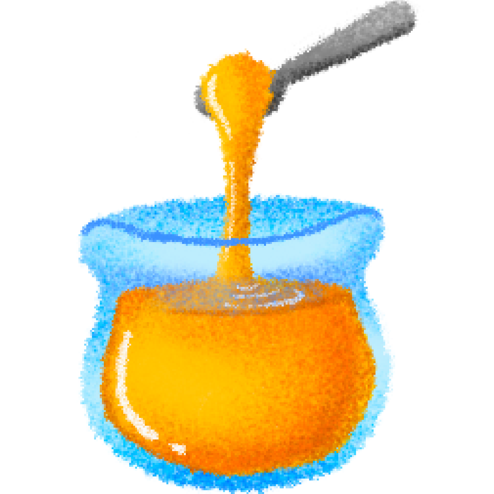
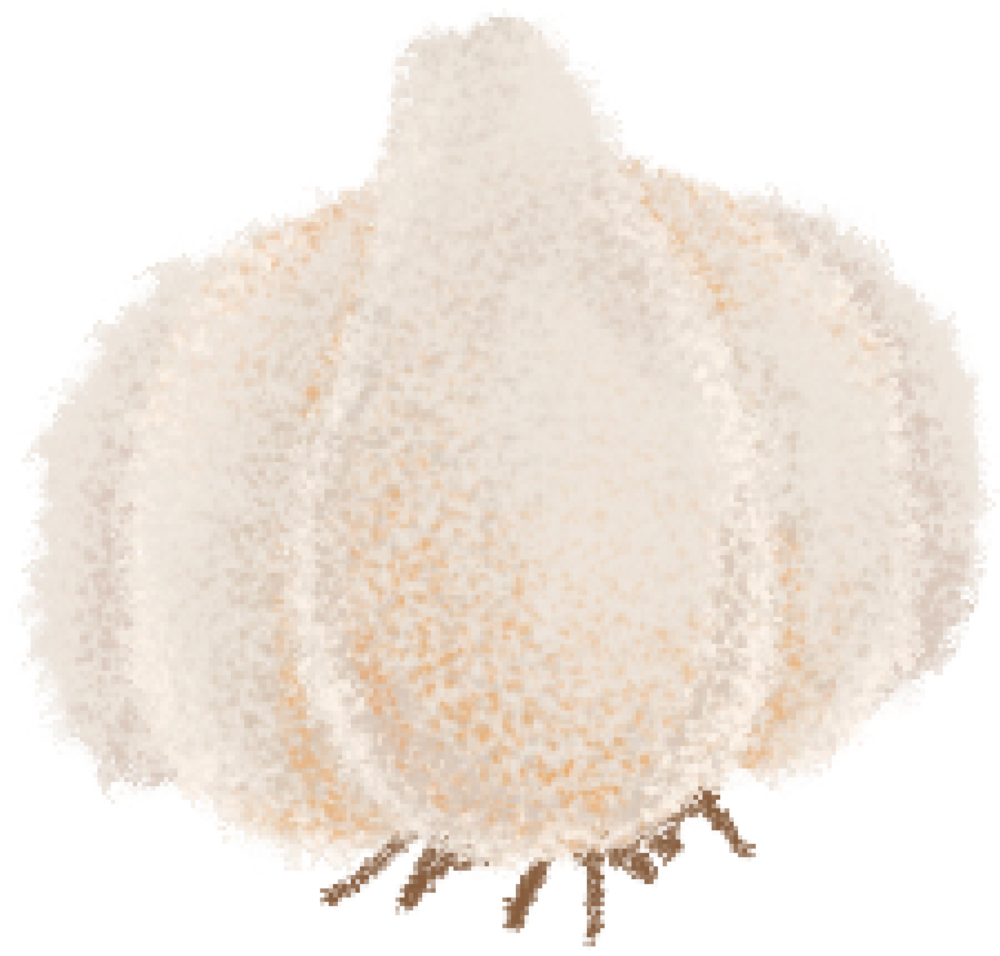

불고기

진간장

꿀 1 큰술

파

양파 반 개
소고기

청양 고추

간마늘 1 큰술
후추
육수
1. 불고기의 양념을 만든다.
불고기를 재울 양념을 먼저 만들어야 한다. 양푼에 진간장과 육수
육수는 다른 요리에도 자주 활용되기 때문에 한 번 끓일 때 한솥에 끓여 냉장고에 얼려 보관하는 것을 추천한다.
물과 멸치, 다시마, 대파, 양파, 무우를 넣고 뭉근하게 육수를 우린다. 대파는 뿌리까지 함께 넣고 양파는 빨간 껍질을 같이 넣어주면 맛있고 건강한 국물을 즐길 수 있다.
를 일대일의 비율로 섞어 베이스를 만든다.
여기에 간마늘 1 큰술, 후추 약간, 꿀 1 큰술을 넣어 잘 저어준다.
2. 고기를 양념에 재운다.
완성된 양념에 불고기용 쇠고기를 넣고 냉장고에서 한 두시간 정도 재운다.
3. 먹음직스럽게 굽기.
고기와 함께 볶을 양파를 적당한 크기로 썰어주고 파와 청양고추를 어슷 썰어 준비한다. 후라이펜이 달구어지면 양념에 재워둔 고기를 넣는다.
고기가 거의 다 익으면 준비한 채소들을 함께 넣어 볶는다.
파는 음식이 부럽지 않다. 어떻게 이런맛이 날까?